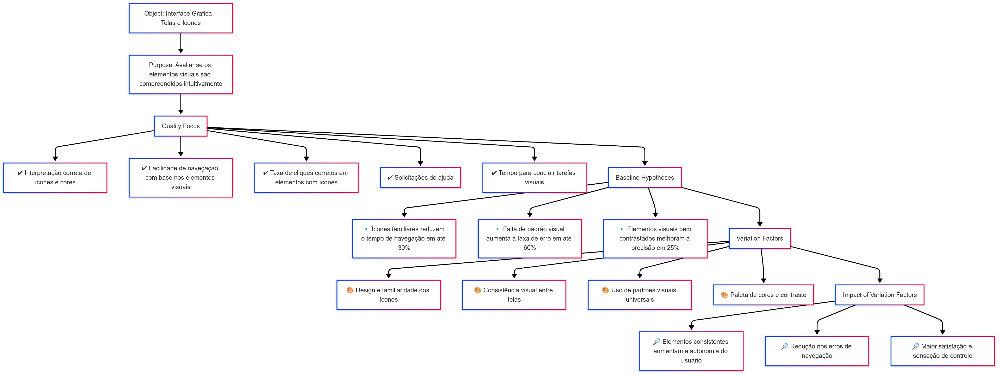

🎯 Objetivo do Negócio - AGROMART
Melhorar a experiência do usuário (UX/UI) com foco especial na inclusão de agricultores com baixa alfabetização textual e digital, por meio de interfaces simples, acessíveis, visuais e intuitivas, garantindo que mesmo usuários semi-analfabetos ou com pouca familiaridade com tecnologia consigam utilizar a plataforma com autonomia e confiança.
🔍 Enquadramento da Avaliação
| 🔎 | 📌 |
|---|---|
| Analisa | a interface do sistema AGROMART |
| Para o propósito de | avaliar o uso da ferramenta |
| Com respeito a | critérios de usabilidade |
| Do ponto de vista de | experiência do usuário |
| No contexto de | uma disciplina de Qualidade de Software |
❓ Questões Objetivo de Medição
🎨 Objetivo 1: Verificar a compreensão dos elementos visuais
❓ Perguntas
| 🆔 | 💬 Pergunta |
|---|---|
| Q4 | Os usuários conseguem distinguir claramente os significados dos ícones e das cores utilizadas? |
| Q5 | As imagens e cores contribuem para a tomada de decisão durante a navegação? |
| Q6 | Há confusão entre elementos visuais com significados distintos ou sobreposição de funções? |
🧩 Diagrama

📋 Abstraction Sheet – Elementos Visuais
| 🔧 Elemento | 📝 Descrição |
|---|---|
| 🎯 Object | Interface gráfica (telas e ícones) |
| 🎯 Purpose | Avaliar se os elementos visuais (ícones, cores, imagens) são compreendidos de forma intuitiva pelos usuários |
| 📌 Quality Focus | - Interpretação correta de ícones e cores - Facilidade de navegação com base nos elementos visuais - Taxa de cliques corretos - Solicitações de ajuda - Tempo para concluir tarefas visuais |
| 🧠 Baseline Hypotheses | - Ícones familiares reduzem o tempo de navegação em até 30% - Falta de padrão visual aumenta a taxa de erro em até 60% - Elementos visuais bem contrastados melhoram a precisão em 25% |
| 🌀 Variation Factors | - Design e familiaridade dos ícones - Consistência visual entre telas - Uso de padrões visuais universais - Paleta de cores e contraste |
| 📈 Impact of Variation Factors | - Elementos consistentes aumentam a autonomia do usuário - Redução nos erros de navegação - Maior satisfação e sensação de controle |
📢 Objetivo 2: Avaliar a clareza dos feedbacks do sistema
❓ Perguntas
| 🆔 | 💬 Pergunta |
|---|---|
| Q7 | Os feedbacks utilizados são percebidos pelos usuários? |
| Q8 | Os sinais do sistema são compreendidos? |
| Q9 | Os feedbacks ajudam a navegabilidade? |
🧩 Diagrama

📋 Abstraction Sheet – Feedbacks do Sistema
| 🔧 Elemento | 📝 Descrição |
|---|---|
| 🎯 Object | Respostas da interface após ações do usuário |
| 🎯 Purpose | Verificar se o sistema comunica corretamente o que está acontecendo |
| 👁️ Viewpoint | Usuários que não compreendem mensagens de erro técnicas |
| 📌 Quality Focus | - Presença de mensagens claras - Feedback visual/sonoro por ação - Padronização dos elementos de feedback - Alertas que previnem erros - Reconhecimento visual da mensagem aplicada |
| 🧠 Baseline Hypotheses | - Mensagens claras reduzem a necessidade de suporte e diminuem erros - Feedback visual/sonoro imediato aumenta a confiança do usuário - Padronização do feedback reduz o tempo de aprendizado - Inconsistência nos feedbacks compromete a previsibilidade do sistema - Feedbacks padronizados promovem uma experiência fluida |
| 🌀 Variation Factors | - Uso de linguagem simples - Tipos de feedback (visuais, sonoros) - Tempo de navegação em um fluxo de telas |
| 📈 Impact of Variation Factors | Feedback claro e imediato aumenta confiança e reduz abandono de tarefas e o tempo de realização |
👥 Tabela de Contribuição
| 🎓 Matrícula | 🙋 Nome completo | 📊 Contribuição (%) |
|---|---|---|
| 211030765 | Guilherme Storch de Oliveira | 16.66 |
| 222037610 | Gabriel Lima da Silva | 16.66 |
| 222022000 | Milena Fernandes Rocha | 16.66 |
| 222025324 | João Lucas Araujo Siqueira | 16.66 |
| 222015248 | Rafael Gomes Pereira | 16.66 |
| 222015112 | Gabriel Reis Scheidt Paulino | 16.66 |
📅 Histórico de Versões
| 📌 Versão | 📆 Data | ✍️ Descrição | 👤 Autor | 🔍 Revisor |
|---|---|---|---|---|
1.0 |
22/05/2025 | Criação da página inicial | Gabriel Lima | Guilherme Storch |
1.1 |
25/05/2025 | Criação da tabela de contribuição | Guilherme Storch | Milena Fernandes |
1.2 |
26/05/2025 | Ajustes e diagrama do objetivo 2 | Milena Fernandes | Guilherme Storch |